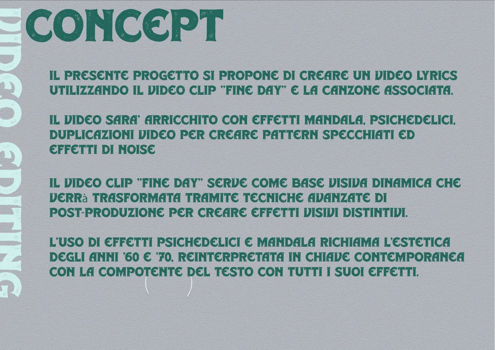
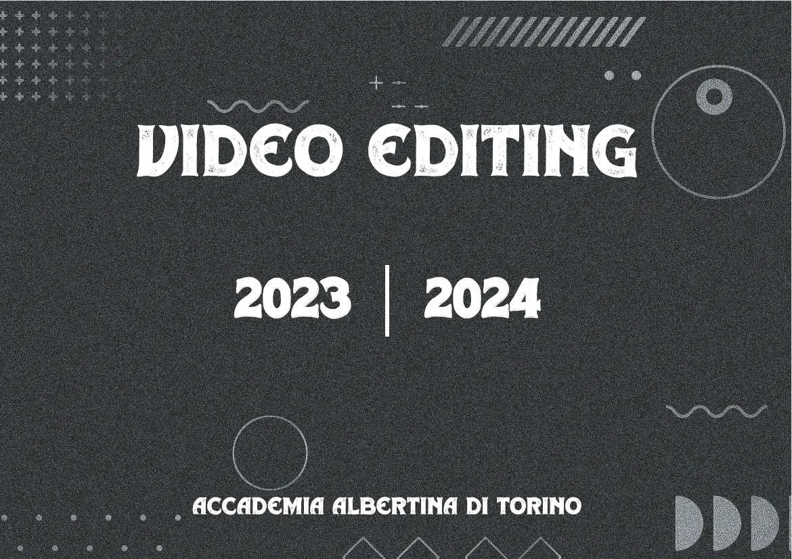
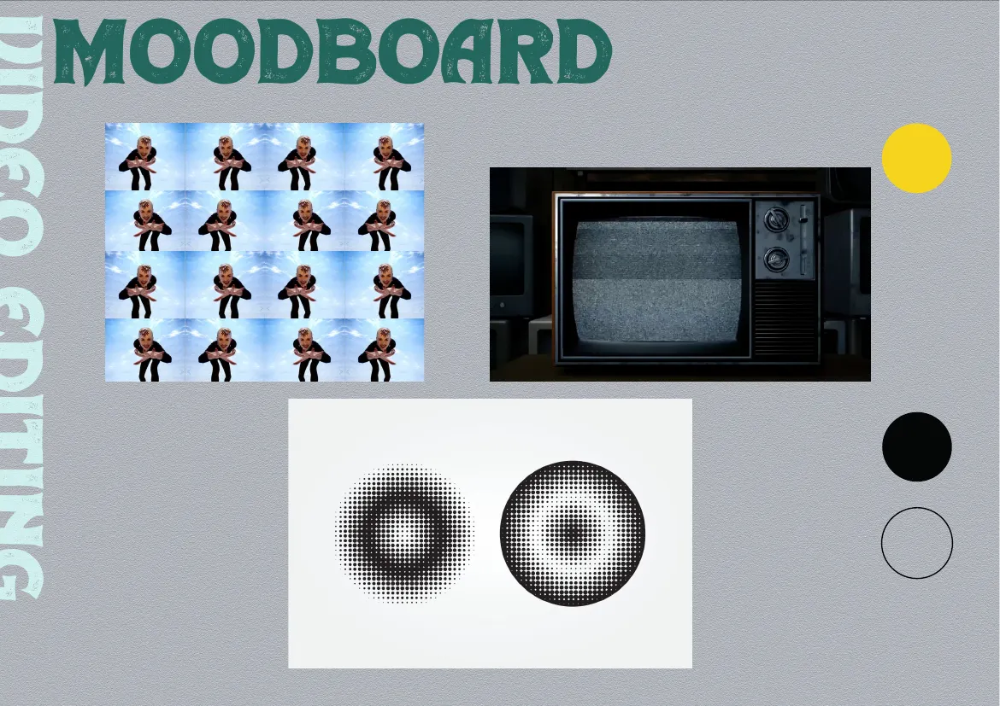
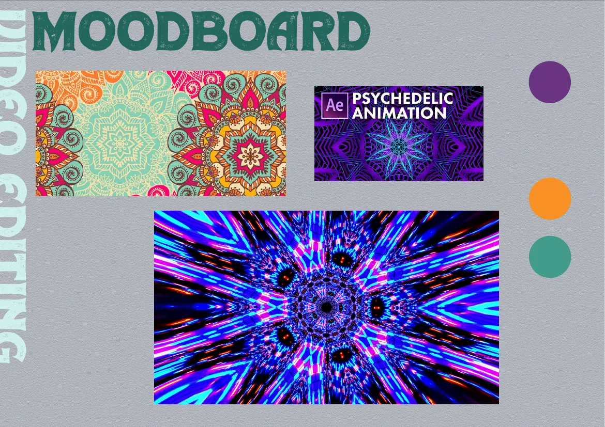
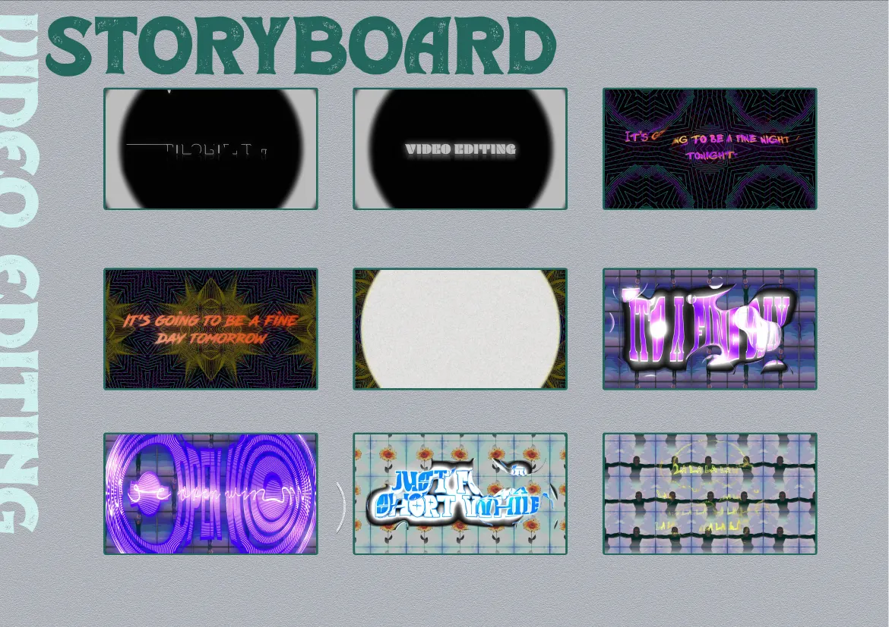

Video lyrics · corso di Video Editing, Accademia Albertina · 2023–24
Fine Day
Un video lyrics psichedelico: effetti mandala, pattern specchiati e noise, montato e animato in After Effects.
Realizzato da solo.
Il video
L'idea
Un video lyrics costruito sul video clip di "Fine Day" e sulla sua canzone. Le immagini diventano una base visiva dinamica che la post-produzione trasforma in effetti mandala e psichedelici, duplicazioni video che creano pattern specchiati ed effetti di noise. L'estetica richiama gli anni '60 e '70, reinterpretata in chiave contemporanea, con il testo come elemento visivo a sé.


Moodboard


Storyboard
Dal titolo ai testi sopra i pattern specchiati.

Facciamo qualcosa insieme.